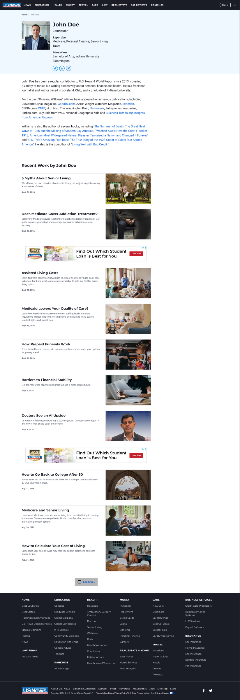
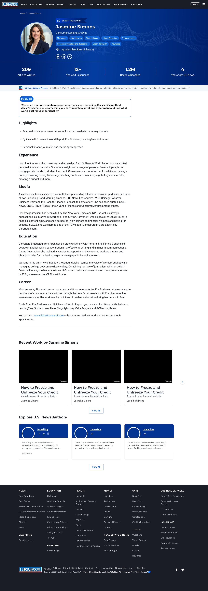
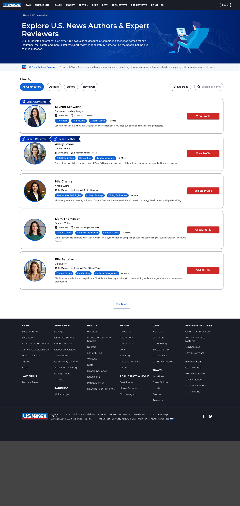
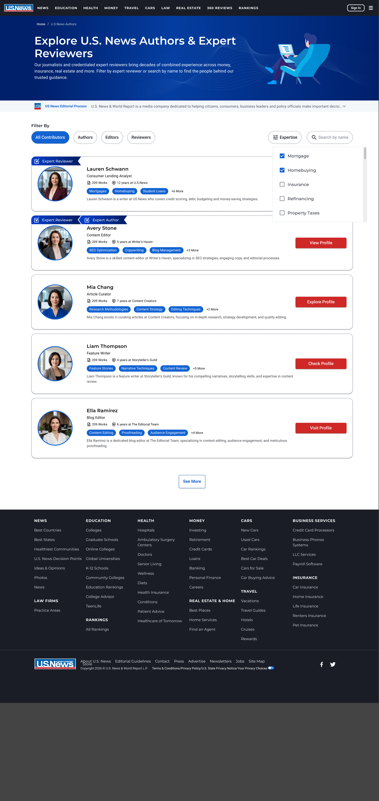
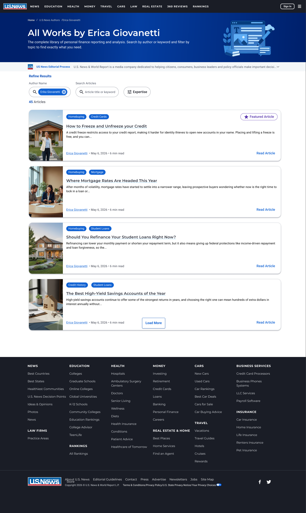
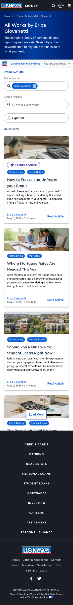

The people behind the guidance deserved a real front door
U.S. News content is trusted because of who writes and reviews it — credentialed journalists and expert reviewers across money, insurance, real estate, health, and more. But that expertise lived on pages that undersold it. This project redesigned the author profile page and, for the first time, gave U.S. News a complete navigation layer around its authors: a directory, a search engine, and filters that connect readers to the right expert in seconds.
It's a dual-audience feature. For readers (B2C), it answers "who is telling me this, and why should I trust them?" For the business and its authors (B2B), it turns every byline into a discoverable, crawlable, conversion-ready asset.
One page, no way in, no way around
The existing author page was a dead end: a short bio paragraph followed by an undifferentiated list of articles. There was no navigation to it or from it — the only option was to land on the author's page and scroll. No search, no filtering, no way to discover other experts, no signal of credentials beyond prose. For a brand whose entire value is trusted expertise, the authors were effectively invisible.

A bio that reads like the rest of U.S. News
The new profile brings author pages into visual and structural consistency with other U.S. News pages: a branded hero with the author's photo, role, and expertise tags; a stat band that quantifies credibility at a glance (articles written, years of experience, readers reached, tenure at U.S. News); and structured bio sections — Highlights, Experience, Media, Education, Career — instead of one wall of text.
Below the bio, recent and featured work is showcased as cards, and an "Explore U.S. News Authors" module cross-links to other experts — so an author page is no longer an exit point but a hub.

From a single page to a discovery system
The heart of the project is navigation that simply didn't exist before. Readers now enter through "Explore U.S. News Authors & Expert Reviewers" — a directory where every path leads to the right expert:
- A search engine — find authors by name, or search across their articles by title and keyword
- Filter by expertise — Mortgages, Homebuying, Insurance, Refinancing, and more, matched to U.S. News verticals
- Contributor-type tabs — All Contributors, Authors, Editors, Reviewers, with credential badges (Expert Author, Expert Reviewer) on every card
- Author article search — an "All Works" page per author, filterable by keyword and expertise
- Featured articles — authors can pin their strongest work, surfaced with a star badge at the top of their results



Conversion and SEO, by design
This isn't cosmetic — it's infrastructure for trust. Search engines increasingly reward demonstrated expertise and authoritativeness, and author pages are exactly where those signals live. Structured bios, credential badges, expertise taxonomies, and dense internal linking between authors and articles give crawlers what prose never could — lifting the SEO of the author pages and of every article that links back to them.
On the conversion side, readers who can verify an expert's credentials convert on that expert's guidance at a higher rate — and authors with a professional, searchable presence bring partnerships, media appearances, and audience back to U.S. News. One feature, compounding in both directions.
Every breakpoint, same system
The full flow — directory, filters, profile, and article search — was designed across desktop, tablet, and mobile, keeping the credential badges, stat band, and search controls fully usable at 390px wide.

Expertise, finally findable
What was a dead-end bio page is now a discovery system: readers reach the right expert in a couple of clicks, authors have a page worth linking from a résumé, and U.S. News gets a compounding SEO and conversion asset built on the credibility it already had. The most important feature projects are often the ones that make existing value visible — this is one of them.